Similar to the default launcher, but with notification indicators, app re-ordering, and customizable home screen shortcuts.
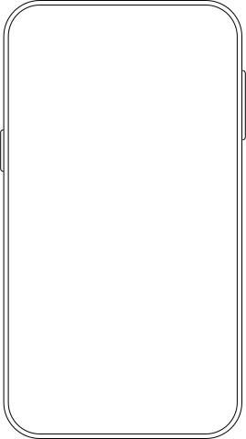
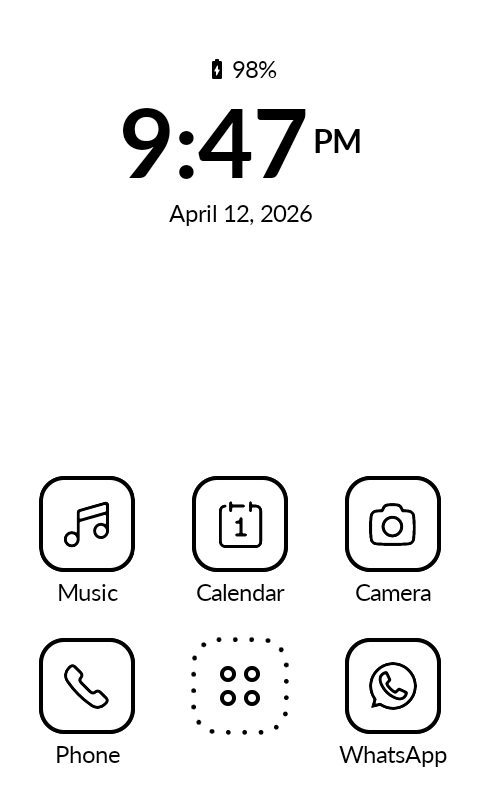
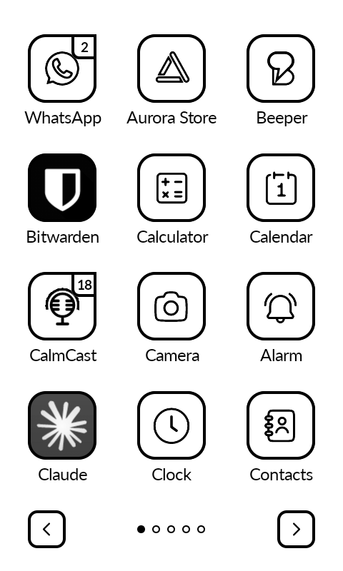
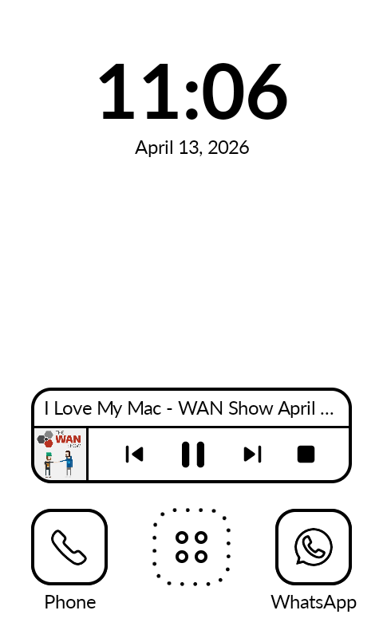
Long-press on any empty area of the home screen.
Long-press on the Phone, SMS, or extra row shortcuts, then pick the app you want to assign.
Long-press on the clock or date to assign an app to it.
Horizontal swipe navigation with dot indicators. Infinite scroll wraps around pages.
Playback controls with song info. Works with Auxio, Spotify, Fossify Music, Foobar, and more.
Circle or rounded shapes. Uniform black & white across ~95% of apps.
Badge counts on app icons. Works with any app that sends notifications.
Zero animations, instant swaps, screen refresh on home press to clear ghosting.
Optional 3 additional shortcuts above the Phone/SMS bar.
Battery percentage with level icon, alarm indicator, AM/PM display.
Set a background image directly. Not managed by Android.
Hide from the context menu or bulk-hide. Rename any app.
Swap-based reordering with reset to alphabetical.
Toggle display brightness by double-tapping the background.
Remove the Android status bar for a cleaner look.
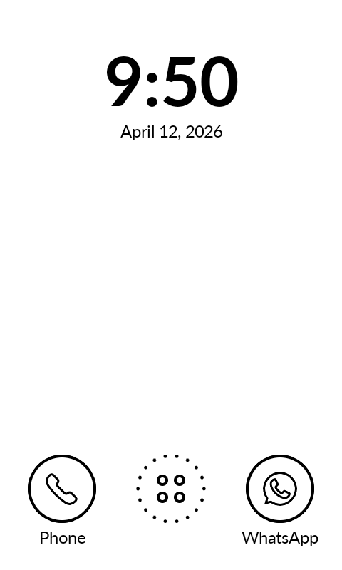
Minimal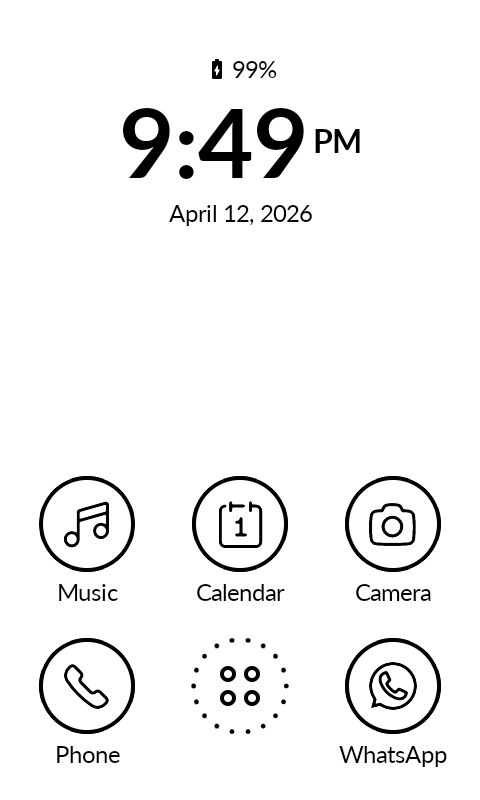
Circle Icons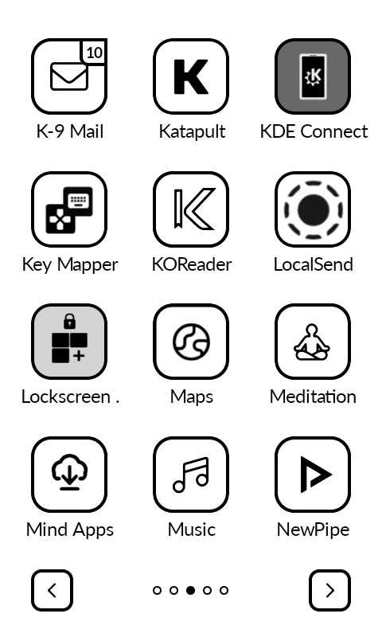
App Grid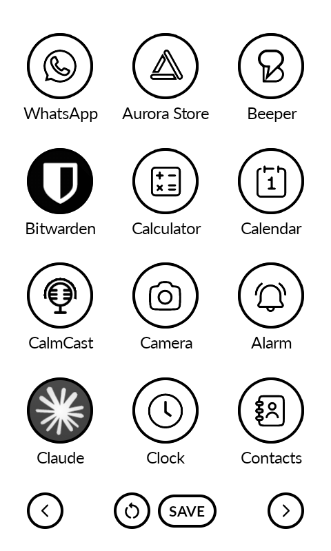
Reorder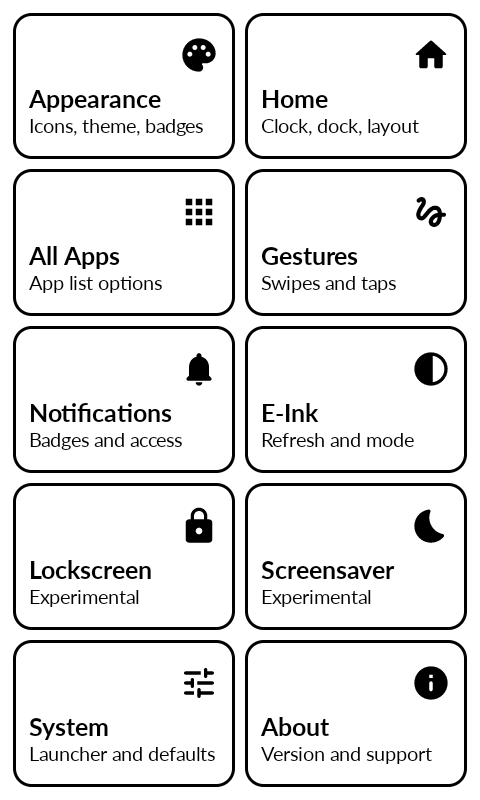
Settings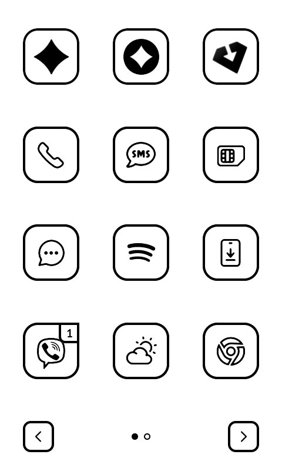
Hide Names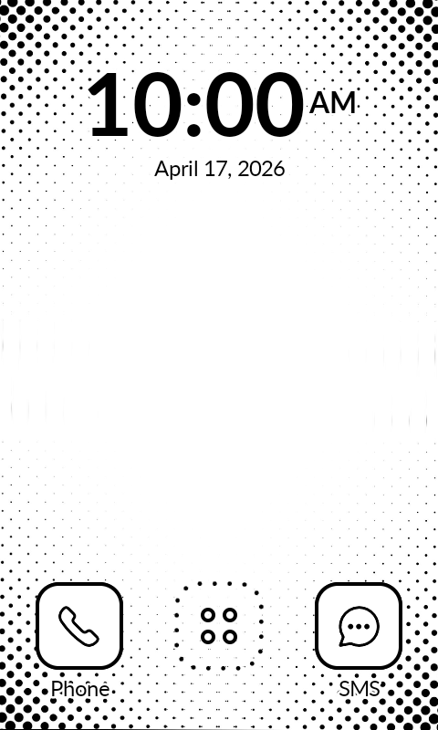
Wallpaper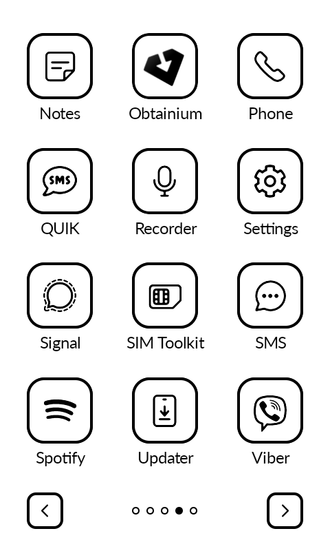
Grid PagesNo.
No.
No.
No. It follows the system format. Change it in Android Settings.
Yes. Long-press an app, tap Reorder, then tap another app to swap. Tap Save when done.
No. No notification tray, no letters screen.
Go to Settings > Notification Log and check if the notification exists in Android. Many apps require Google Play Services for push notifications.